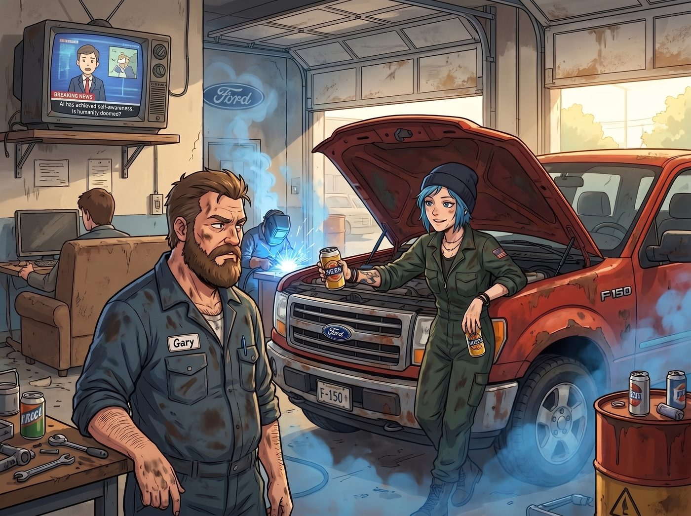
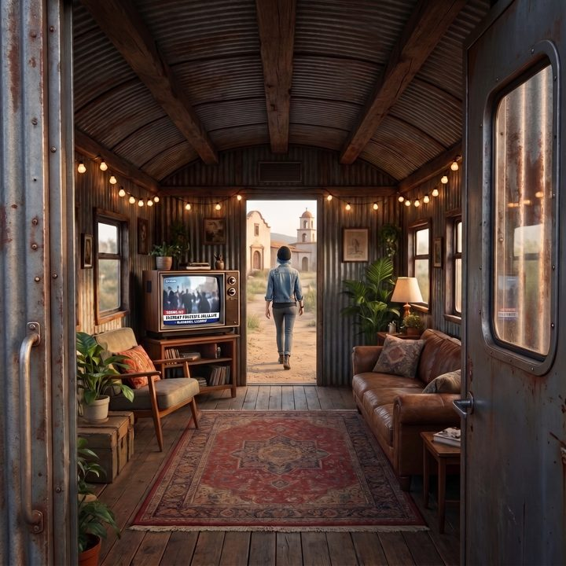

不可取代的雙手


營地往南二十英里的福特經銷商維修部，空氣中瀰漫著濃烈的機油味和電銲的臭氧氣息。
Chloe 穿著那件滿是油污的連身工作服，半個身子探在一台報廢的福特 F-150 皮卡引擎蓋裡，正試圖用兩罐啤酒賄賂相熟的技師 Gary，好順走一個九成新的水泵。
就在這時，客戶休息區那台積滿灰塵的電視裡，插播了一條商業新聞。
畫面下方的跑馬燈打出了一行字：「AI 開始自己寫程式了，碼農要失業？」
新聞說，GitHub 剛剛推出了一個叫 Copilot 的工具，工程師只要打幾個字，它就能自動補完一整段程式碼。科技圈吵成一團，有人說這是革命，有人說初級程式員的飯碗要保不住了。
接著，鏡頭切到一位頭髮花白的勞動經濟學家。他推了推眼鏡，慢條斯理地說：
「真正難被自動化的，反而是那些需要雙手和經驗的工作。一個修車技工能鑽進狹窄的引擎艙，憑手感摸出螺絲滑牙，憑聽覺判斷皮帶老化。這些東西，目前沒有任何軟體做得到。」
聽到這句話，Chloe 手裡的扳手停在了半空中。
她臉上緩緩浮現出了一抹極度囂張、反派般的狂妄笑容。
在過去的半年裡，她在二號車廂裡受夠了 Lily 那些「演算法」「轉化率」和「VBA 巨集」的降維打擊。作為一個每天雙手沾滿油污的藍領，她終於在電視上的權威專家嘴裡，找到了屬於街頭龐克的終極正義。
Chloe 連水泵都不要了。她立刻掏出那台螢幕碎了一角的手機，對著電視錄了一段十秒鐘的影片，然後踩著那雙滿是泥巴的馬汀靴，猶如一位剛剛打了勝仗的羅馬將軍，風風火火地殺回了營地。
一、首席技術官
「砰！」
二號車廂的門被一腳踢開。
「全體起立！尤其是妳，實習生！」Chloe 狂笑著衝到多螢幕工作站前，將手機螢幕狠狠地懟到了 Lily 面前，音量開到最大。經濟學家那句「沒有任何軟體做得到」在車廂裡迴盪。
「聽到了嗎？！」Chloe 雙手插腰，仰天長笑，「電視上的專家都說了！妳們這些整天敲鍵盤的書呆子，很快就要被那個會自己寫程式的 AI 扔進歷史的垃圾桶！而老娘這雙沾滿機油的手，才是不可取代的未來！從今天起，這個營地的首席技術官是我！快給我端一杯慶功啤酒來！」
正在流理台邊切檸檬的 Kate 擔憂地看著 Chloe，生怕她因為過度興奮而腦充血。躺在沙發上的 Victoria 則翻了個白眼：「藍毛猴子，妳是不是機油吸太多產生幻覺了？人家誇的是會修車的人，跟妳這個只會把車拆成廢鐵的破壞狂有什麼關係？」
而坐在風暴中心的 Lily，連敲擊鍵盤的節奏都沒有亂掉半拍。
她平靜地看完那段影片，推了推圓框眼鏡。
「Chloe 學姐，那位經濟學家說得沒錯。」Lily 點了點頭，竟然用一種非常讚賞的語氣認同了她，「需要在不規則的實體空間裡靠手感和經驗做判斷的工作，確實比只會照著需求搬運程式碼的工作更難被取代。」
Chloe 愣了一下，顯然沒料到 Lily 會這麼痛快地認輸。「算……算妳識相。」
二、相容
「不過，」Lily 的語氣輕輕一轉，「我有一個問題。」
「什麼？」
「您忘在店裡的那個水泵，對得上您的引擎嗎？」
Chloe 張了張嘴。「當然對得上！都是福特的 V8，都是 F-150 那一系的……」
她頓了一下，眼睛突然一亮。
「等等，妳不是有那個什麼會回答問題的 AI 嗎？」Chloe 一把把 Lily 的鍵盤拉到自己面前，「老娘自己問！讓妳的機器人親口告訴妳，誰才是對的！」
她用兩根沾著機油的手指，一個字一個字地敲：「Gary 那台報廢 F-150 的水泵，能不能裝在我的猛禽上？」
不到兩秒，螢幕上跳出了一段回答，語氣篤定得像一份官方說明書：
「是的，該水泵與您的車輛完全相容，可以直接安裝。」
「哈！」Chloe 一拍桌子，得意地轉過頭，「聽到了沒有，實習生？連妳的機器人都站在老娘這邊！」
Lily 沒有說話。她只是伸手把鍵盤拉了回來，在對話框裡打了四個字：
「你確定嗎？」
按下回車。
不到兩秒，螢幕上跳出了新的回答：
「抱歉，您說得對。經過重新確認，這兩款車型搭載的引擎不同，水泵並不相容。感謝您的指正。」
車廂裡安靜了。
Chloe 盯著螢幕，下巴差點掉到桌上。「它……它剛剛不是還很確定嗎？！」
「是的。」Lily 平靜地說，「它會在您質疑的那一秒，立刻道歉、立刻改口。您問它十次，它能給您十個不同的答案，而且每一個都說得一樣有自信。」
她推了推眼鏡，看了 Chloe 一眼，又看了螢幕一眼：
「所以，相信它第一個答案的人錯了。」她頓了頓，「而它自己，連自己錯在哪裡都不知道，只是看我的語氣在調整說法。」
Chloe 張了張嘴，發現自己跟那台機器一起被罵了，一時間不知道該先替誰辯解。
「那、那到底相不相容？！」
「我從來不問它對不對，學姐。我自己去查。」
Lily 點開了另一個視窗。那是福特公開的零件目錄，一張密密麻麻的對照表，她早就用紅框圈出了兩行。
「Gary 那台報廢的 F-150，是五點零升的引擎。您的猛禽，是六點二升。兩者的水泵接口和安裝孔位不一樣。」她說，「第一個答案把兩款引擎搞混了，第二個答案碰巧說對了，但它其實不知道為什麼。真正的答案，在這張表上。」
Chloe 盯著那兩行紅框，囂張的笑容一點一點地凝固在了臉上。
「就算您沒有忘記把它帶回來，」Lily 補充道，「您也會在拆開引擎之後才發現裝不上去，然後浪費一整個下午。」
三、便條紙
車廂裡安靜了兩秒。
「所以……」Chloe 的聲音小了一半，「妳的意思是，老娘白跑了一趟，忘掉的那個東西，本來就是錯的？」
「是的。」
Lily 從桌上撕下一張便條紙，遞給她。
上面用工整的字跡寫著一串零件編號、一個地址，和一個價格。
「我查了附近幾家廢車場的公開庫存。往北十英里的那家，有一個對得上六點二的原廠水泵，從一台撞壞了車頭、但引擎完好的猛禽上拆下來的。六十美元。我打過電話，他們幫您留到週五。」
Chloe 低頭看著那張便條紙，半天說不出話。
「這就是您說的那種工作，學姐。」Lily 推了推眼鏡，語氣很平靜，「現在的 AI 確實會寫程式，也會回答問題，而且回答得非常有自信。但它不知道自己什麼時候是錯的。只會照著它的答案去做事的人，不管是寫程式的，還是管寫程式的人的，才是真正會被取代的那一群。」
「而我的工作，」她頓了頓，「是知道該問什麼，然後去確認它說的到底對不對。」
四、雙手
Chloe 把那張便條紙捏在手裡，看了很久。
「……操。」她最後憋出了一個字，抓了抓藍色的頭髮，「好吧。算妳贏了一半。」
「一半？」
「另一半是老娘的。」Chloe 把便條紙塞進工作服胸前的口袋，梗著脖子說，「妳查得到零件，但妳裝得上去嗎？妳聽得出皮帶什麼時候該換嗎？」
Lily 想了想，認真地搖了搖頭。
「不能。」她說，「所以，要把它裝進去、聽出皮帶有沒有老化，還是只有您做得到。」
Chloe 愣住了。她準備好的一肚子反駁，突然沒了用處。
「……哼。」她別過臉，轉身朝門外走去，腳步卻明顯輕快了不少，「老娘現在就去廢車場。誰也別攔我。」
Max 早就窩在沙發的角落裡笑得直不起腰了。她舉起寶麗來，對著電視新聞定格的畫面，和 Chloe 那道雖然吃了癟、卻抬頭挺胸走出門的背影，按下了快門。
相紙緩緩吐出。Max 咬著筆蓋，在背面寫下：
『規則第九十二條：AI 寫得出程式碼，但它不知道自己什麼時候是錯的。所以這個營地裡，誰都不可取代：一個負責知道答案對不對，一個負責把零件裝進去。』